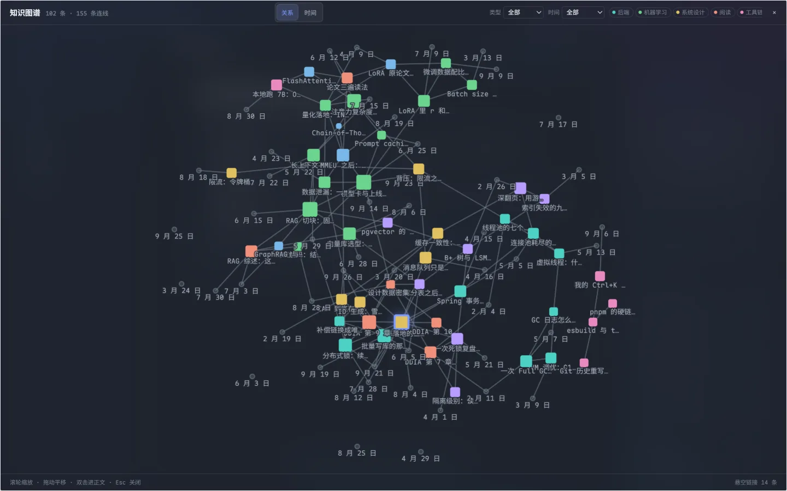
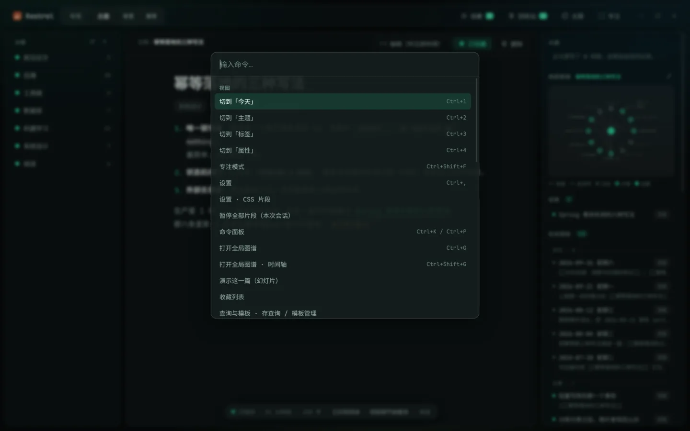

今天
一打开就是今天这一页
左边是这一年的热度，中间是今天写的，右边替你把这一篇的来路摆好：大纲、局部图谱、出链、别人怎么指过来。写下 [[某篇]]，那一篇的正文就直接嵌在这一页里读。

本地优先 · 一个文件 · 零网络请求
早上记一条，晚上写成一篇。中间不用换软件，也不用重打一个字。
今天
左边是这一年的热度，中间是今天写的，右边替你把这一篇的来路摆好：大纲、局部图谱、出链、别人怎么指过来。写下 [[某篇]]，那一篇的正文就直接嵌在这一页里读。

Markdown
表格、任务列表、代码高亮、脚注、公式、Mermaid 流程图，写下去就是排好的。想看原始的 .md 长什么样，按 Ctrl+Shift+M 切到源码档。

![日记里用 ![[…]] 嵌进另外两篇的正文，带来源那一行的标题与可点的链接](assets/screenshots/g-embed.webp)




Windows 10 / 11，装到你自己的账户里，不需要管理员权限。
Windows 10 / 11装到你自己的账户里，不需要管理员权限安装包约 149 MBAGPL-3.0 开源不联网 · 无账号 · 无遥测